This is a collection of projects I created in my AP Computer Science Principles class during my sophomore year. We were given around two to four weeks of work time during class for each project. I thoroughly enjoyed my time making these projects and often found myself working on them outside of class out of my interest. Having been fascinated by programming ever since I was young, this class not only enabled me to expand my knowledge but also ignited a sense of creativity within me.
This collection includes:
The source code for each project is available in the repository, which has unedited code from my sophomore year. I plan on cleaning up and reworking some of the projects in the future.
source code change theme
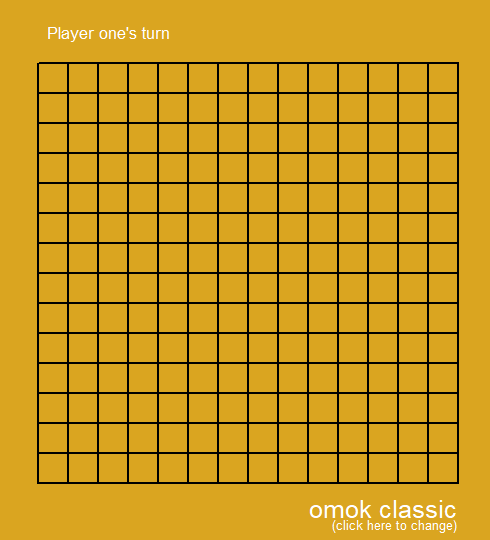 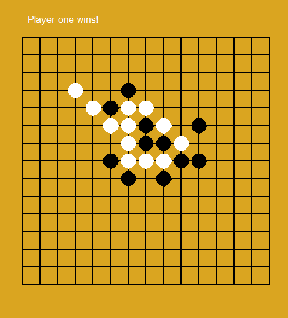
This was the first, actual project we were assigned. "Projects" before this one had instructions to follow and did not allow much freedom. This project was our midterm project for the first semester, and we were free to create anything using the Turtle library.
I had ambitious ideas of making platformer games (which I would eventually accomplish for my final project), but with the limitations of using Turtle, I quickly scrapped the idea. After brainstorming, I settled on making Omok (also known as Gomoku), a two-player strategy board game where players take turns placing stones on a 15 by 15 board to form a five-in-a-row horizontally, vertically, or diagonally.
Creating the board and the stones was quite simple, but coming up with a way to place the stones on the grid and check for 5-in-a-rows was quite tricky. I did get it in the end (albeit a very messy and unoptimized code), which allowed me to have enough time to add color themes to the game. This would become a regular feature I would add in later projects.
source code change theme
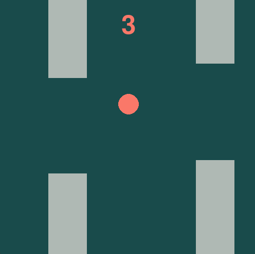
Why yes, of course, I made a blatant Flappy Bird clone. Well, sort of.
For my second project, which was our semester one final project, we were now allowed to use the Pygame library. This opened up doors of possibilities, but since I was still fairly new to this library, I wanted to test the waters. Soon enough, I found myself working on a game that was quite similar to Flappy Bird.
This project was a huge leap from my last project as I had to work with physics, collisions, and animations. I faced many bugs and problems, but in the end, I was able to finish the project. I am quite proud of what I was able to make, especially the bouncing text and the explosive death animation. For the game style, I decided to use only shapes and a minimal color palette with multiple themes, which made the game look even more polished.
source code change theme
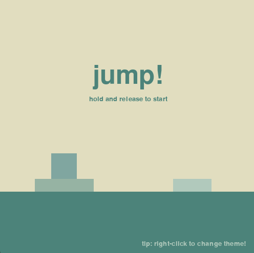 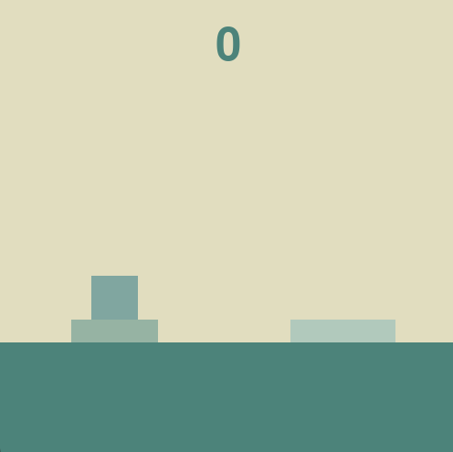
This project was the first project I collaborated on with another person. It was also my first project for the second semester.
At the time, I was invested in a game called Penguin Isle. This game had a 3D mini-game where the player would control a penguin to jump between platforms. The player would hold the screen down and release it to make the penguin jump. Based on how long the screen was held down, the penguin would jump a certain distance. This mini-game inspired me to create a similar game in 2D.
With my experience in making bounce!, I found physics and collisions more easy to implement in the game. I had moments in development where I was stuck, but eventually, I made it through the end. Like bounce!, I used a similar minimalistic style with multiple color themes. On top of everything, it was a really fun experience to create a game with someone else and collaborate with them.
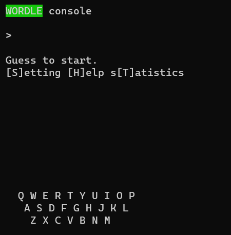 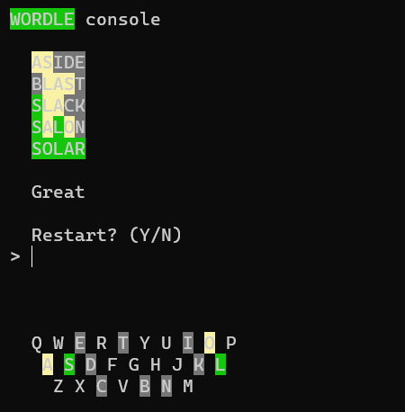
This project was assigned when the word puzzle game Wordle was at its peak of popularity. We were assigned to create our own version of Wordle. For this project, I decided not to use either Turtle or Pygame as I wanted to recreate the game on the console.
It was really fun trying to recreate almost every aspect of the game in the limited console window. I used ASNI escape codes to give letters colors as well as edit the console text. I also found the actual Wordle words list and used it. Creating a way to check the guesses was the most tricky part and took a lot of trial and error. However, once the main gameplay was done, I was free to add whatever I wanted to like a menu, a help screen, a statistics screen, a keyboard, and even text animations! I really enjoyed this project.
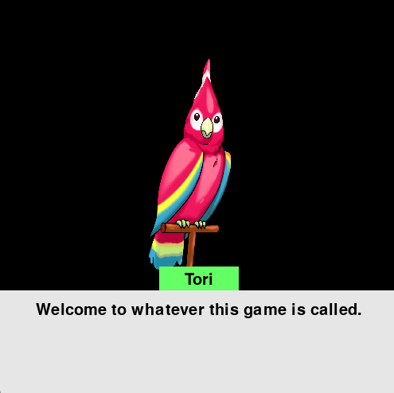 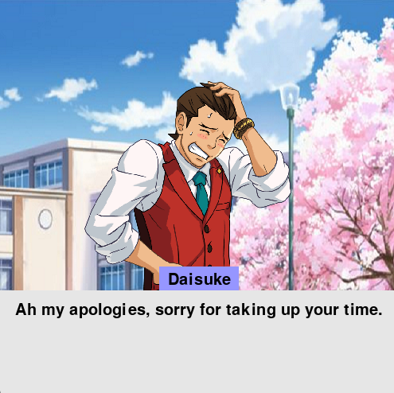
This project was another collaboration project and we were assigned to create an interactive novel.
For this project, I took inspiration from an interactive novel game series called Ace Attorney. This project was definitely interesting and brought many new experiences. For the first time, I created a scrolling speech system, option selection system, achievement system, and even my own script structure system. Furthermore, this project was also the first game where I used assets so I had to learn how to load the images properly. Overall, I was proud of the different game mechanics that I had managed to implement.
The most important part of an interactive novel game is the story. My initial idea for the story was most definitely not a dating simulator. However, that was what my partner decided to write about.
This game has nine endings (including a secret one).
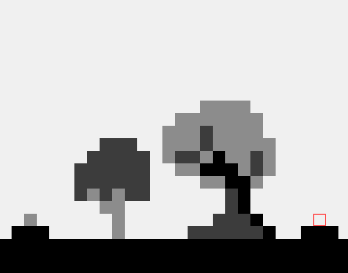 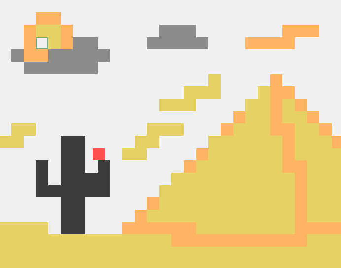 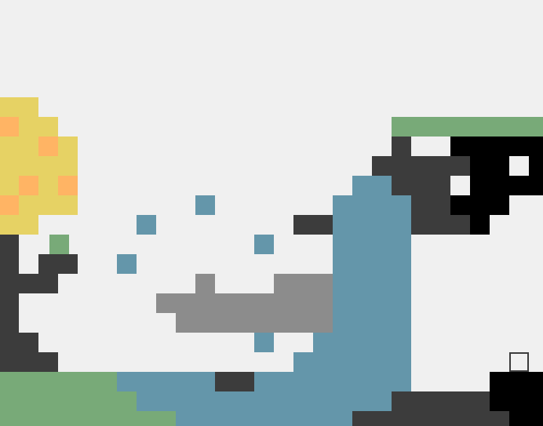
Our semester two final project ended up being the project we would submit as the Create Performance Task for AP Computer Science Principles. I decided to create an idea that I had in the back of my mind ever since I started the course: a platformer game.
I based the game around the theme of color, which had been prominent throughout my projects. Working on this project was a whole new experience. I had to come up with level designs, a level loading system, a player collision system, and more. However, with each challenge, I found joy in overcoming and finding the solution. In the end, I managed to create a puzzle platformer with seven intricately crafted levels (some of which were tricky to beat even for me). I also wanted to create an in-game text system, but I was limited by time and had to use the console window for text. I ended up remaking the game two years later with p5.js, adding the improvements I wanted while maintaining the core gameplay to allow the player to experience the original game. This version of colors can now be played online.
In this game, the player controls a dull colored block searching for colors. Every time the character finds a new color, it cannot touch it. Only when the player completes the level, the character can touch the color safely and unlock the ability to change to that color. Since the character can go through blocks of the same color, this puzzle game not only requires the player to make precise movements and jumps but also requires them to use switch to different colors at the right time.